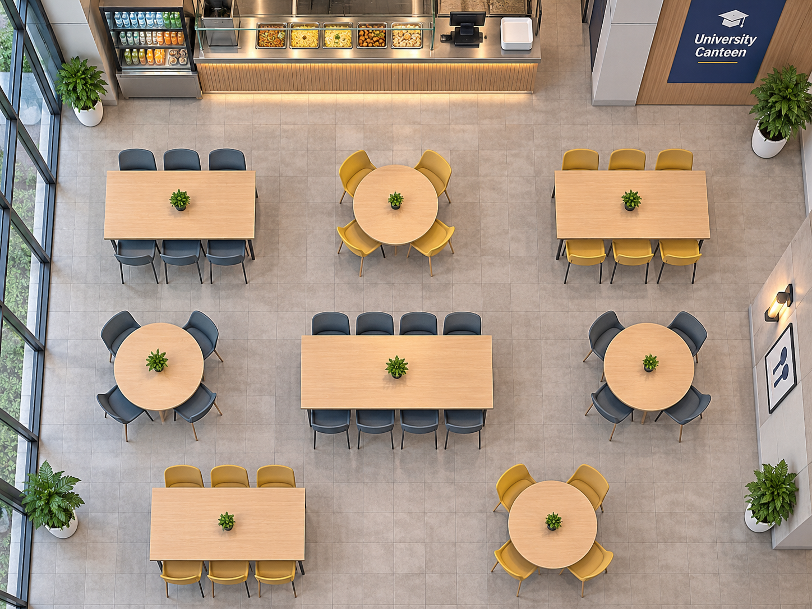

Admin workspace
Configure table zones and manage seating availability.
Draw rectangular zones around tables in the reference image. Zone configurations are saved in SQLite and linked to physical tables.
2. Draw the table zone Click and drag over the image to mark the table.

No table zones configured.